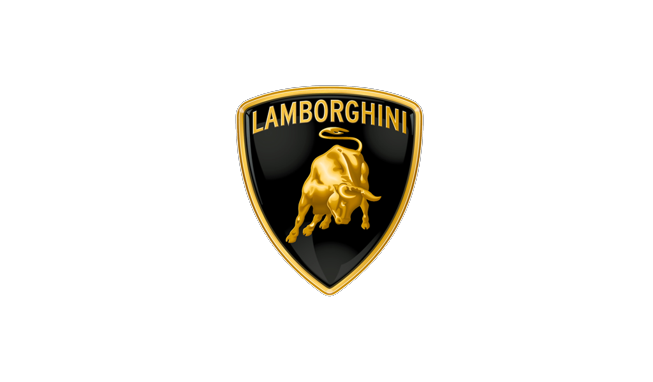

History
Nace el mito

En 1963, y cansado de padecer sucesivos problemas con sus Ferrari –aunque dicen que también por puro ego y amor propio en su particular rivalidad con el ‘comendatore’-, Ferrucio Lamborghini, tercer fabricante italiano de maquinaria agrícola, decide fundar en Sant'Agata Bolognese (Bolonia, Italia) su propia compañía de automóviles deportivos: Automobili Ferruccio Lamborghini SpA, derivada de Lamborghini Trattori SpA.